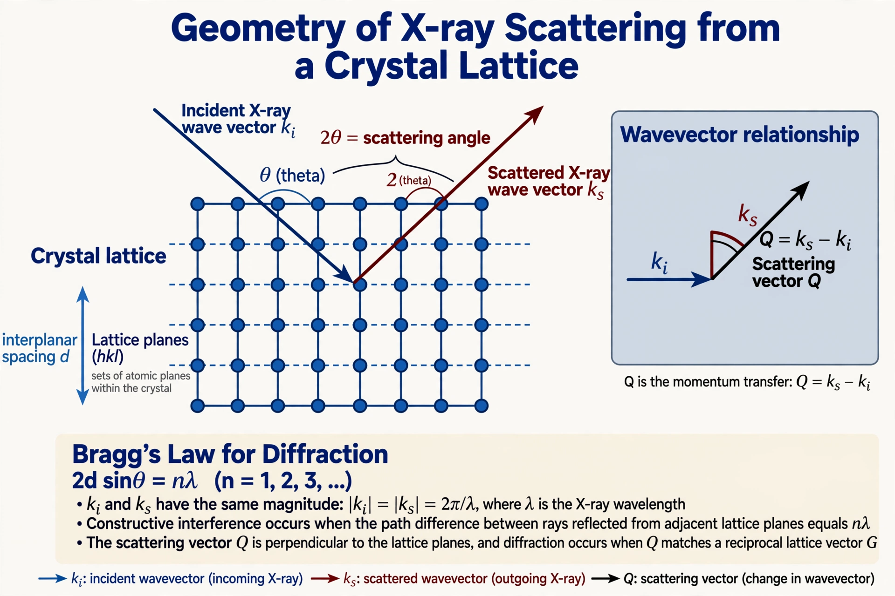

In crystallography, the Laue equations are three equations describing the conditions under which a crystal lattice produces constructive interference of scattered X-rays — that is, a diffraction maximum. They were derived by Max von Laue in 1912 in his analysis of the first X-ray diffraction experiments.
Let a crystal have primitive lattice vectors a, b, c. Let k be the wave vector of the incident X-ray beam and k′ that of the scattered beam (elastic scattering, |k| = |k′|). Diffraction occurs only when the scattering vector satisfies all three conditions simultaneously:
a · (k − k′) = 2π h b · (k − k′) = 2π k c · (k − k′) = 2π l
where h, k, l are integers (Miller indices of the corresponding reciprocal-lattice point). Equivalently, the scattering vector k − k′ must coincide with a vector of the reciprocal lattice — the geometric content visualized with the Ewald sphere construction.
The Laue equations are mathematically equivalent to Bragg's law, nλ = 2d sin θ, due to William Henry Bragg and William Lawrence Bragg, which pictures diffraction as specular reflection from lattice planes separated by distance d. The Laue formulation is three-dimensional and generalizes naturally to electron and neutron diffraction.
In the Laue method of diffraction photography, a stationary crystal is exposed to a polychromatic ("white") X-ray beam; because the wavelength varies, the Laue conditions can be met for many sets of planes at once, producing a symmetric pattern of spots used to determine crystal orientation and symmetry.
Categories: Crystallography | Diffraction